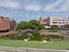
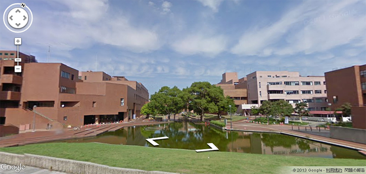

360°キャンパスツアー
筑波大学のキャンパスをGoogleストリートビューで閲覧できます。
画面をドラッグすることで、周囲の風景を360°見渡すこともできますので、是非、隅々まで散策してみてください。
- 
石の広場
石の広場
石の広場
石の広場
石の広場

石の広場／噴水
第2エリアと第3エリアで学ぶ学生の憩いの場です。天気の良い日には、噴水を見ながら芝生の上でランチタイムを楽しむ学生の姿がよく見られます。
石の広場は秋に行われる学園祭「雙峰祭」のメインステージとして利用されるなど、筑波大学を象徴する場所のひとつです。